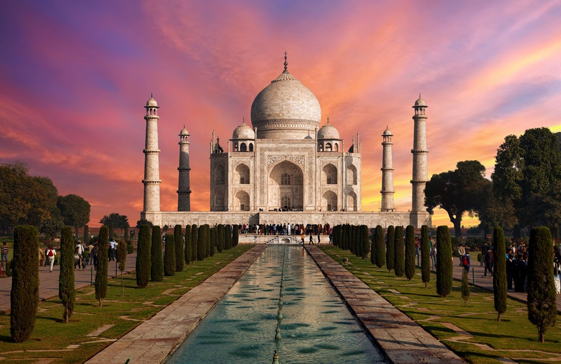

Originally designed by diocesan architect Francisco de Paula del Villar, the design and building of the temple
was taken over by world-famous architect Antoni Gaudi. Though not originally intended to be a cathedral with its
iconic towers and combination of Gothic and Art Nouveau style, it is one of the most iconic structures in the
world and a testament to Gaudi’s unique architectural style.
Construction began in 1882, but the plans were partially destroyed during the Spanish Civil War and much time
has been spent trying to piece them back together again. The building is due to be finally completed by 2026, a
full century after Gaudí’s death.
Built from 1631 to 1653, the Taj Mahal is perhaps the finest example of Mughal art. Shah Jahan had the Taj Mahal built as a mausoleum for his beloved wife Mumtaz Mahal. His devotion inspired the creation one of the most famous buildings in the world, whose 240 foot high dome never fails to draw gasps from observers. The historical and cultural importance of the Taj Mahal is recognised by the fact that it is a UNESCO World Heritage Site.

This elliptical amphitheatre in the centre of Rome is considered as one of the greatest architectural feats
achieved by the Ancient Romans. The stadium was capable of seating 50,000 spectators and used mainly for
gladiatorial games.
Built from concrete and stone, construction began on the Colosseum began around 72AD and finished in 80AD. The
design and shape of the Colosseum has been the inspiration for many modern day stadiums.
Dubbed The Dancing House, Prague’s Nationale-Nederlanden building was designed by Croatian-Czech architect Vlado Milunić and Canadian-American architect Frank Gehry. The deconstructivist, or new-baroque, architecture forms the unusual dancing shape thanks to 99 concrete panels, each a different shape and dimension. The building's proved so popular that it now features on a gold 2,000 Czech koruna coin issued by the Czech National Bank.
The Great Mosque of Djenné in Mali is one of the most famous buildings in Africa, and it's so important in Mali
that it features on the country's coat of arms. It's made of earth bricks that have been dried in the sun,
mortar made of sand and a plaster that creates a smooth surface.
It is thought that a mosque has existed on the site since the 1200s. The current structure was rebuilt in 1907,
and there's been some debate over whether or not the structure was influenced by French architecture (Mali
became independent from France in 1906). Once a year, the people of Djenné have a festival and work together to
complete any necessary repairs.
Petra is an archaeological and a historical city in the Southern part of Jordan which was known by the locals as
Raqmu. It is believed that Petra was established in the early 6th century BC. The settlement could have begun in
about 9000 BC in the region. The Nabateans, who constructed Petra, did so because of its proximity to important
trade routes in the area.
In the 1st century AD, the popular Khazan structure was constructed which is believed to have been the mausoleum
of the King of Nabatea, Aretas IV. During the Byzantine period, several churches of Christian faith were built.
The significance of the city declined over the years and finally abandoned in the early Muslim era. It was
listed by UNESCO as a World Heritage Site in 1985.
Created in the 12th Century over three decades by King of the Khmer Empire, Suryavarman II, Angkor Wat located in Siem Reap (northwestern Cambodia) is the largest religious monument in the world. Originally dedicated to the Hindu god Vishnu it was gradually transformed into a Buddhist temple. It also remains as the best preserved and largest temple in the ruins of the city of Angkor, and attracts millions of visitors a year.
Famed Catalan architect Antoni Gaudí designed this modernist private residence in the early 20th century. It is often referred to as “the stone quarry” thanks to its curvy self-supporting rough stone facade. It’s also lined with twisted wrought-iron balconies and boasts an immense rooftop terrace.
The current main tower at Osaka Castle is a concrete reconstruction of the 17th-century castle and was completed in 1931. In its original construction back in the 16th century, it was unparalleled as the largest and best constructed castle in Japan. Today, it offers fantastic views of the city and is a popular tourist destination in spring for the beautiful cherry blossoms. The castle grounds cover approximately 60,000 square meters (15 acres) and contain thirteen structures that have been designated as important cultural assets of Japan.
This Benedictine abbey was built throughout the centuries, and many of the structures on the grounds are considered to be architectural marvels. The overall design combines elements of Roman and Gothic styles, making the Le Mont-Saint-Michel one of the coolest-looking places to visit.
The Heydar Aliyev Centre in Baku, Azerbaijan was designed by Iraqi-British architect Zaha Hadid in 2007 and opened in 2012. The centre’s amazing single continuous folded surface have made it an internationally recognised architectural work and one of the best examples of the Neo-futurism style. The centre won the Design Museum’s Design award in 2014 making Zaha Hadid the first woman to win the top prize in that competition.
This art museum was designed by the iconic architect Frank Lloyd Wright. The building has a cylindrical shape that is narrower at the bottom and widens at the top. This makes it so that the inside layout consists of a unique ramp gallery that unfolds in a continuous spiral. Wright conceived the design as a “temple of the spirit”.
Rio de Janeiro features many landmarks, and this is one of its most famous. The saucer-shaped building has been compared to a UFO. Part of its interest comes from the juxtaposition of having such a modernist structure on a beach.
Scroll to the top